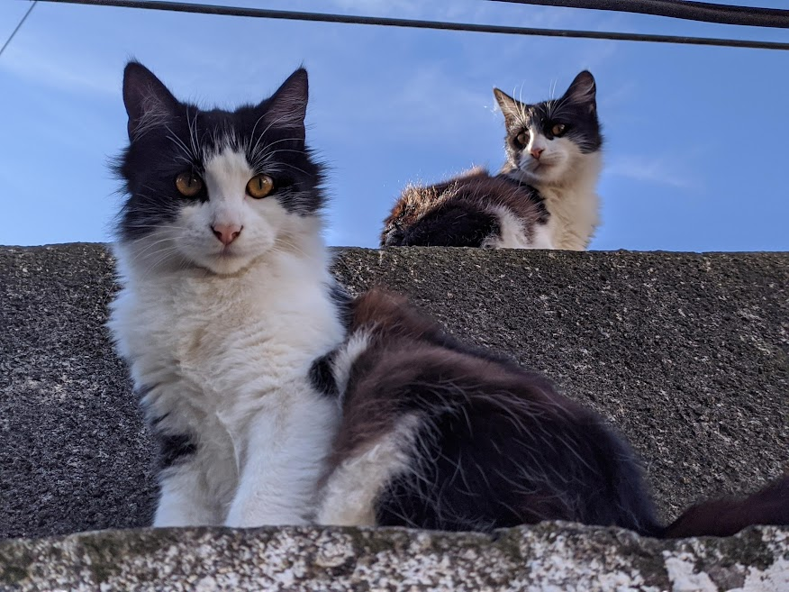
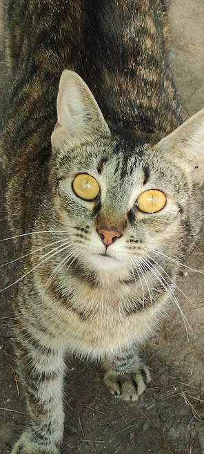

Tipos de Gatos
Los gatos tuxedos, también conocidos como "gatos de esmoquin" debido a su apariencia que se asemeja a un traje formal de esmoquin, son una variante de color en el pelaje de los gatos domésticos. Estos gatos se caracterizan por su patrón de pelaje distintivo, que generalmente presenta un cuerpo predominantemente negro con manchas blancas en la cara, el pecho, el estómago y las patas, imitando así la apariencia de un esmoquin. Aquí tienes más información sobre los gatos tuxedos: Patrón de color: El pelaje de los gatos tuxedos suele ser negro en su mayoría, con el blanco en áreas específicas. La cara es mayormente negra, pero puede tener una "máscara" blanca que rodea los ojos y se extiende hacia la nariz. Además, su pecho, patas y pies son generalmente blancos, lo que da la impresión de que llevan un esmoquin blanco debajo del abrigo negro. Personalidad: La personalidad de un gato tuxedo puede variar ampliamente, ya que depende de factores individuales y de crianza. Sin embargo, muchos gatos tuxedos son conocidos por ser juguetones, cariñosos y sociales. Pueden ser amigables y adaptarse bien a los entornos familiares. Historia: El patrón de color de esmoquin no está ligado a una raza específica de gato, sino que puede encontrarse en gatos de diferentes razas y mestizos. Es simplemente una variante de color en el pelaje que se produce debido a la genética. Cuidados: Los gatos tuxedos no requieren cuidados especiales en términos de su pelaje, pero, como todos los gatos, necesitan atención veterinaria regular, una dieta equilibrada y estimulación mental y física para mantenerse saludables y felices. Popularidad: Los gatos tuxedos son apreciados por su aspecto elegante y llamativo, lo que ha llevado a que sean considerados como mascotas muy atractivas para muchas personas. Su apariencia distintiva y su variedad de personalidades hacen que sean queridos por quienes los adoptan. En resumen, los gatos tuxedos son una variante de color de los gatos domésticos que se caracteriza por su patrón de pelaje negro y blanco que recuerda a un esmoquin. Son conocidos por su personalidad variada y a menudo se consideran mascotas cariñosas y juguetonas.
El Toyger es una raza de gato relativamente nueva y se caracteriza por su sorprendente parecido con un tigre pequeño. A continuación, se presenta un resumen de la raza de gato Toyger: Origen: La raza Toyger se desarrolló en la década de 1980 en Estados Unidos a través de cruces selectivos entre gatos domésticos de rayas atigradas y gatos de bengala. El objetivo era crear un gato que se asemejara visualmente a un tigre. Apariencia: Los Toygers tienen un pelaje corto y suave con un patrón de rayas atigradas que se asemeja al pelaje de un tigre. Sus rayas suelen ser de color negro o marrón sobre un fondo de pelaje rojo o anaranjado, lo que les da una apariencia sorprendentemente similar a la de los tigres salvajes. Tamaño: Los Toygers son gatos de tamaño mediano a grande, con cuerpos musculosos y atléticos que sugieren la agilidad de un felino salvaje. Personalidad: Estos gatos suelen ser cariñosos, juguetones y sociales. Son conocidos por su inteligencia y pueden disfrutar de la interacción con sus dueños y la participación en juegos interactivos. Cuidados: Los Toygers no requieren cuidados especiales en términos de su pelaje, ya que tienen un pelaje corto y fácil de mantener. Sin embargo, como con cualquier gato, necesitan una alimentación adecuada, atención veterinaria regular y estimulación mental y física para mantenerse felices y saludables. Popularidad: El Toyger es una raza de gato que ha ganado popularidad debido a su apariencia única y atractiva, que recuerda a un tigre en miniatura. Sin embargo, dado que es una raza relativamente nueva, su población es limitada en comparación con algunas razas más establecidas. En resumen, el Toyger es una raza de gato que se ha desarrollado para parecerse visualmente a un tigre y se distingue por su pelaje rayado atigrado. Son gatos juguetones y cariñosos que han ganado seguidores debido a su apariencia sorprendentemente similar a la de un felino salvaje.

El carácter de los gatos puede variar ampliamente de un individuo a otro, pero existen algunas características generales que son comunes en muchas de estas mascotas felinas. Aquí tienes una descripción de los rasgos de personalidad típicos de los gatos: Independencia: Los gatos son animales naturalmente independientes. A menudo, disfrutan de su propia compañía y pueden cuidarse a sí mismos en mayor medida que algunos otros animales domésticos. Esto les da una sensación de autonomía. Juego y curiosidad: Los gatos son juguetones y curiosos por naturaleza. Les gusta explorar su entorno, perseguir juguetes y participar en juegos interactivos. Estos comportamientos también ayudan a mantener su mente activa y su cuerpo en forma. Cariño selectivo: Aunque se les considera independientes, muchos gatos son cariñosos con sus dueños. Sin embargo, tienden a ser selectivos en cuanto a a quién muestran afecto. Pueden formar fuertes lazos con sus cuidadores y buscar atención y caricias de ellos. Comunicación sutil: Los gatos se comunican de manera sutil mediante maullidos, ronroneos, lenguaje corporal y gestos faciales. Cada maullido o comportamiento puede tener un significado específico, y los dueños atentos pueden aprender a entender las señales de su gato. Rutina: Los gatos suelen apreciar la rutina y pueden ser resistentes a los cambios en su entorno o en su horario de alimentación. Establecer una rutina regular puede ayudar a mantener a un gato tranquilo y feliz. Caza instintiva: Los gatos son cazadores naturales, y este instinto puede manifestarse en juegos de caza con juguetes o incluso en la búsqueda de insectos en el hogar. Proporcionar oportunidades para que expresen este comportamiento puede ser beneficioso. Sensibilidad al estrés: Los gatos pueden ser sensibles al estrés y pueden reaccionar negativamente a cambios drásticos en su entorno o a situaciones estresantes. Es importante proporcionarles un ambiente seguro y estable. Necesidades de rascado: Los gatos necesitan rascar para mantener sus garras en buen estado y marcar su territorio. Proporcionar rascadores adecuados es esencial para prevenir daños en muebles y alfombras. Habilidades de limpieza: Los gatos son extremadamente limpios y pasan mucho tiempo acicalándose. Esto ayuda a mantener su pelaje en buen estado y a eliminar olores. Es importante recordar que la personalidad de un gato individual puede ser única, y su crianza y experiencias anteriores también pueden influir en su comportamiento. Algunos gatos pueden ser más extrovertidos y sociables, mientras que otros pueden ser más tímidos o reservados. La comprensión y el respeto de las necesidades individuales de cada gato son clave para una convivencia armoniosa y satisfactoria.